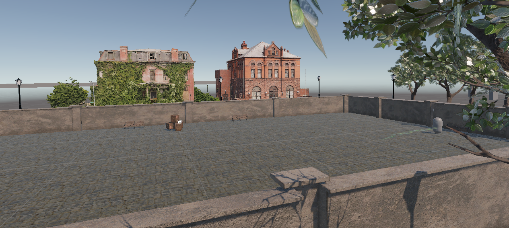

Movement Framework

Problem
Many first-person movement systems focus on simplicity, but feel restrictive during fast-paced movement.
Actions often happen independently, which can make movement feel less responsive and reduce player control.
This project of mine explores how different movement mechanics can work together as part of a single system. The goal was to create a responsive modular
movement framework in Unity that allows different mechanics to interact without conflicting with each other.
To improve player control, several mechanics were implemented and designed to solve specific interaction problems.
For example, camera-based dashing aligns movement output with player intention, dash canceling increases mobility based on skill,
and bullet time gives more time to react during high-speed actions.
Movement
Base movement system was designed to treat input not as separate actions, but as modifiable behaviour; as a foundation that supports additional mechanics.
Acceleration, momentum, and state transitions are structured in a way that allow expansion and additions, without large changes to the core of the system
As a result: smoother movement, and a framework that supports mechanics interactions

Dash
The dash mechanic was introduced to improve short-range mobility and five player an advantage in meneuverability.
The goal was to provide quick repositioning based on players agency. The system applies temporary acceleration
while still remaining compatible with existing movement behavior and other mechanics.

public override void Enter()
{
timer = 0f;
dashTime = player.playerData.dashDuration;
doubleTapTime = player.playerData.dashDuration;
storedVelocity = player.rb.linearVelocity;
baseDashImpulse = player.playerData.dashImpulse;
dashImpBonus = 1f;
PerformModifierCheck();
//calculation of angle, for bobbing camera effect
float Tilt = 0f;
float sideDot = Vector3.Dot(dashDirection, player.orientation.right);
Tilt = sideDot * 5f;
player.playerCam.DoTilt(Tilt);
player.playerCam.DoFOVKick();
}
public void PerformModifierCheck()
{
//does a check for applicable modifiers or changes in behaviour
if(!player.omniDirDash)
{
//checks direction input for performing dash
if(player.desiredMoveDir.sqrMagnitude < 0.01f)
dashDirection = player.orientation.forward;
else
dashDirection = player.desiredMoveDir.normalized;
}
else if(player.omniDirDash)
{
baseDashImpulse *= 5f;
dashImpBonus /= player.playerData.dashImpOverride;
dashDirection = player.playerCam.whereAmILooking.forward;
DoDash();
}
if(player.dashDampenerOverride)
dashImpBonus *= player.playerData.dashImpOverride;
dashImpulse = baseDashImpulse * dashImpBonus;
}
public void DoDash()
{
player.rb.linearVelocity += dashDirection * dashImpulse;
}
Camera-input based Dash
Traditional directional movement relies on movement input, which can create a disconnect
between player intention and actual resulted movement direction.
This mechanic changes dash direction to follow camera orientation instead. Using the camera as the directional
reference makes movement feel more intuitive and aligned with visual focus.

if(player.omniDirDash)
{
baseDashImpulse *= 5f;
dashImpBonus /= player.playerData.dashImpOverride;
//whereAmILooking is an object, from rotation of which the vector of camera input is calculated
dashDirection = player.playerCam.whereAmILooking.forward;
DoDash();
}
Dash Cancel
The dash cancel mechanic allows movement actions to be interrupted before completion. This reduces commitment to a single action and increases flexibility during movement.
Result: greater player agency and compatibility between mechanics.

public void ReadInput()
{
//if this is active
if(Input.GetKeyDown(player.playerData.dashKey) && player.dashDampenerOverride)
{
//and button has been pressed within a time slot
if(Time.time - lastShiftPressTime <= doubleTapTime)
{
player.playerCam.DoTilt(0f);
//dash is being cancelled and state being changed, without dampeining the movement velocity
if(!player.grounded)
player.ChangeState(player.airState);
else if(player.sprintHeld)
player.ChangeState(player.sprintState);
else
player.ChangeState(player.walkState);
}
lastShiftPressTime = Time.time;
}
}
Bullet Time
Bullet time was introduced to improve decision-making during high-speed movement by temporarily extending reaction time.
Result: improved interaction quality during fast-paced situations.
public override void Update()
{
timer += Time.unscaledDeltaTime / player.playerData.bulletTimePower;
if(timer >= Duration)
IsActive = false;
base.Update();
ReadInput();
if(IsActive)
{
Time.timeScale = player.playerData.bulletTimePower;
}
if(Duration - timer > 0)
player.playerData.remainingBulletTime = Duration - timer;
if(Duration <= 0.1f)
player.playerData.remainingBulletTime = player.playerData.bulletTimeDuration;
}
public void ReadInput()
{
scrollTimer -= Time.unscaledDeltaTime;
if(scrollTimer <= 0f)
{
//changes degree to which time slows
if(player.mouseWheelScroll > 0f)
{
player.playerData.bulletTimePower += player.playerData.bulletTimeScale;
player.playerData.bulletTimePower = Mathf.Clamp(player.playerData.bulletTimePower, 0.1f, 1f);
scrollTimer = scrollCooldown;
}
else if(player.mouseWheelScroll < 0f)
{
player.playerData.bulletTimePower -= player.playerData.bulletTimeScale;
player.playerData.bulletTimePower = Mathf.Clamp(player.playerData.bulletTimePower, 0.1f, 1f);
scrollTimer = scrollCooldown;
}
}
if(player.mouseWheelScroll > 0f && player.playerData.bulletTimePower == 1f)
IsActive = false;
if(!IsActive && player.bulletTimeIsActive)
{
Time.timeScale = 1f;
player.playerData.bulletTimePower = 1f;
player.bulletTimeIsActive = false;
player.playerCam.bulletTimeIsActive = false;
}
}
Mechanics Interaction
Together these mechanics that are built on a modular frame are able to produce results that are bigger than simply sum of its parts
← Back to Portfolio